1. 啟動前準備
- Arduino 已燒錄
B518_Arduino_MVP_Test.ino，USB 接到本台 Mac mini，W5100 接到產線 switch；確認燒錄時的 Board 與實際 UNO R4 Minima／WiFi 相符。 - Arduino IDE Serial Monitor 已關閉，避免 USB CDC 被占用。
- DFU／FCT 的 CSV 根路徑可讀寫；BT 的 TestData 根路徑可讀取。
- 螢幕截圖資料夾已建立，且與 macOS Command+Shift+3 的儲存位置一致。
- 測試 HMI 完整位於同一螢幕，解析度、縮放與製作模板時相同。
2. 主畫面與 Arduino 連線
V0.1.13 採狹長主畫面（約 420 × 820），將日常控制保留在單一欄：連線、測試條碼、目前 JOB、Arduino 網路設定與即時 Log；不常調整的內容則集中到「設定」視窗。
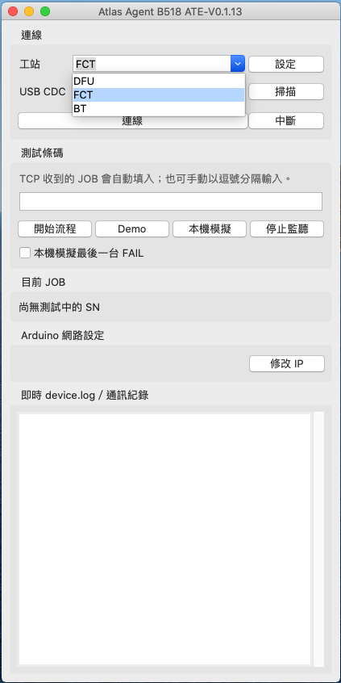
| 畫面區域／按鍵 | 用途 | 操作重點 |
|---|---|---|
| 工站 | 切換 DFU、FCT、BT 流程 | 必須與本機測試設備一致；不同工站的 JOB 會被拒絕。 |
| USB CDC／掃描／連線／中斷 | 選擇與管理 Arduino 序列連線 | 按「掃描」後選 /dev/cu.usbmodem…；不要選 Bluetooth port。 |
| 設定 | 開啟路徑、模板、流程與 HID 設定 | 按「套用」後立即保存設定。 |
| 測試條碼 | 顯示 TCP JOB，或手動輸入逗號分隔 SN | 正式量產以 Arduino TCP 收到的結構化 JOB 為主。 |
| Demo／本機模擬／停止監聽 | 現場 slot 對應輸入、離線資料模擬與中止監聽 | 本機模擬不使用 Arduino 或影像匹配，勿指向正式量產資料夾。 |
| 目前 JOB／即時 Log | 顯示測試中的 SN、USB 指令、CSV 與結果狀態 | 發生異常時先保存完整 Log。 |
選擇工站
於「工站」下拉選單選 DFU、FCT 或 BT。每次開線、切換治具或收到錯誤 JOB 時都應重新確認。
掃描並選擇 USB CDC
按「掃描」，選擇名稱含 usbmodem 的 Arduino USB CDC。Bluetooth-Incoming-Port 與 BLTH 不是 Arduino。
連線並確認韌體
按「連線」後，Agent 會自動送出 GET_IP。新版 Arduino 會在 IP:… 後回覆 INFO:PRODUCT=…;FW=…;PROTO=…;BOARD=…；確認畫面顯示 IP、韌體、協定與板型，再開始測試。未回覆 INFO 的舊板會顯示「未知／舊版」，不會阻止操作。
BT 工站的個別 Start 控制
切換為 BT 時，主畫面會顯示 Start 1～4。四個 slot 都要測試時，輸入全部 SN 後按「開始流程」以點擊 Start All；稀疏 slot 則使用對應的 Start 1～4。
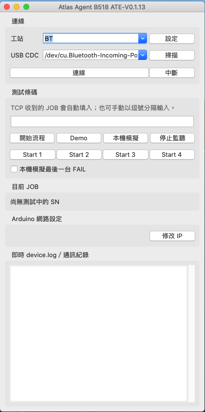
修改 Arduino IPv4
於「Arduino 網路設定」按「修改 IP」，輸入唯一的 IPv4 位址並按 OK。成功回覆後 HMI 會更新，設定會保存於 Arduino EEPROM。
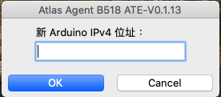
3. 設定：路徑、流程、HID
主畫面按「設定」後，依序使用「路徑與模板」、「流程設定」與「HID 設定」。此視窗在 macOS Mojave 10.14 與 Catalina 10.15 可使用；Finder 外觀可能略有不同，但選取資料夾的操作相同。
路徑與模板
CSV／BT TestData 根路徑應選最上層資料夾；Log 根路徑可留白；OpenCV 模板與螢幕截圖路徑應為固定、可離線存取的位置。
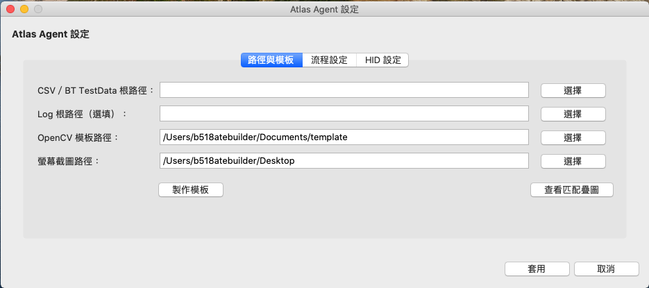
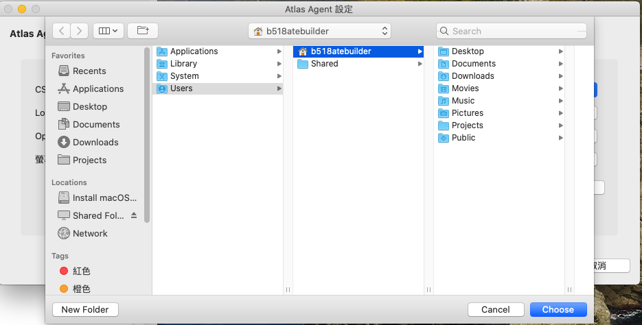
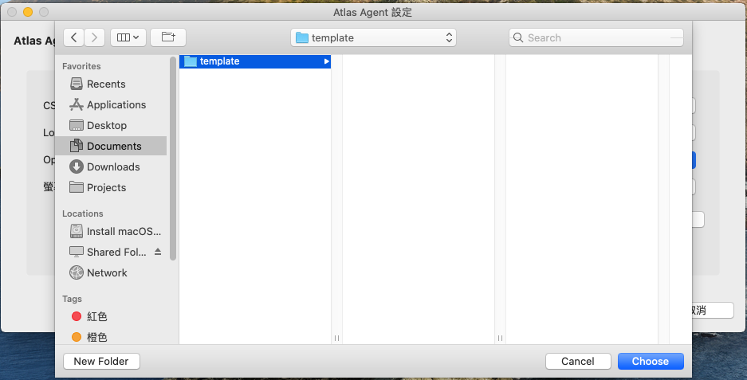
template 資料夾後按 Choose。流程設定
選擇 DFU 畫面設定、設定結果逾時秒數，並決定是否自動同步 DFU／FCT 的 Slot checkbox。未勾選代表 Demo 手動 Slot 模式：操作人員先在測試 HMI 設定 checkbox，Agent 不會驗證或修正。
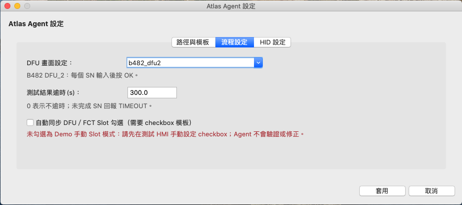
HID 設定
這些值僅影響 Arduino HID 指令，不會使用 macOS 軟體鍵盤或滑鼠。優先使用依截圖／顯示器自動計算比例；若疊圖正確但落點偏移，再調整比例、偏移或 absolute 虛擬桌面尺寸。
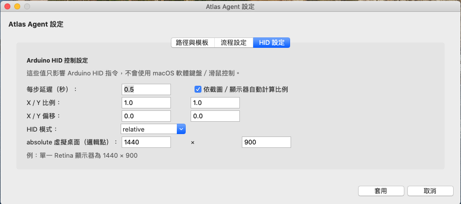
4. 製作 OpenCV 影像模板
模板必須由實際部署的 Mac mini、實際螢幕解析度與實際 HMI 縮放製作。畫面縮放、主題或 HMI 版本改變後，應重新製作模板。
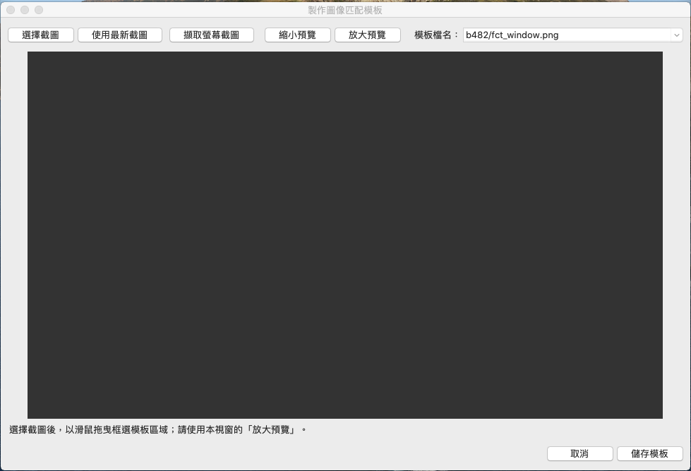
| 按鍵／區域 | 功能 |
|---|---|
| 選擇截圖 | 挑選既有 PNG 截圖；適合已有標準畫面或重做模板。 |
| 使用最新截圖／擷取螢幕截圖 | 讀取截圖路徑最新檔案，或由已連線 Arduino HID 觸發 Command+Shift+3。擷取時 Atlas Agent 主畫面、設定頁與模板頁會暫時隱藏，完成或失敗後自動恢復。 |
| 縮小預覽／放大預覽 | 僅調整框選時的預覽倍率，不改變原圖或模板像素。 |
| 模板檔名／儲存模板 | 依目前工站選正確相對檔名，將紅框區域存入模板根路徑。 |
固定現場畫面
讓目標 HMI 完整顯示於單一螢幕且不被遮住。
取得部署機截圖
可選既有截圖、使用最新截圖，或在 USB CDC 已連線時按「擷取螢幕截圖」。按下後 Atlas Agent 會暫時消失，讓目標 HMI 不受遮擋；請等待畫面自動恢復並載入新截圖。
框選穩定區域
保留固定標題、標誌或完整按鈕，避開游標、SN、日期、PASS／FAIL 與測試中狀態。
儲存並驗證
依下拉檔名逐一儲存；執行流程後用「查看匹配疊圖」確認綠框與落點。
FCT checkbox 範例
FCT 需要 b482/fct_window.png、b482/slot_checkbox_checked.png 與 b482/slot_checkbox_unchecked.png。checked／unchecked 需在相同位置、以相近範圍裁切。七槽 DFU 會自動裁出 checkbox 主體並以灰階邊緣比較方框與勾形，因此視窗取得焦點後由灰底黑勾變成綠底白勾仍可辨識；若兩種狀態分數過近，Agent 會顯示 START_FAILED 並停止輸入條碼。


各工站模板清單
| 工站 | 必需模板 | 用途 |
|---|---|---|
| DFU | b482/dfu2_window.png、dfu2_sn_input.png、dfu2_ok.png、checked、unchecked | 定位 DFU 視窗、輸入 SN、按 OK，並在自動模式同步 checkbox。 |
| FCT | b482/fct_window.png、checked、unchecked | 稀疏 slot 時定位與同步 checkbox；全 slot 時可直接監聽。 |
| BT | b482/bt_window.png、bt_start_all.png、bt_start_1.png～bt_start_4.png | 定位 BT 視窗，並點擊 Start All 或指定的單一 slot。 |
所有檔案均儲存在模板根路徑的 b482/ 下。BT 的 Start 1～4 必須各自從現場畫面裁切，不可複製同一份模板後只改檔名。
5. 測試與 Demo
正式上位機模式
正常量產由 Windows 上位機經 Arduino TCP 傳入 JOB，Agent 顯示目前 JOB 並回覆 ACK。範例：
DFU:JOB=20260723-001;1=SN001,2=SN002,4=SN004\r\nDFU
定位畫面、同步 checkbox、輸入 SN 並監聽 CSV。
FCT
全 slot 可直接監聽；稀疏 slot 依設定同步 checkbox。
BT
全四 slot 點 Start All；稀疏 slot 分別點 Start 1～4，並監控 TestData CSV。
現場 Demo：slot 與 SN 一一對應
主畫面按「Demo」開啟輸入視窗。每格對應一個 slot，留白代表該 slot 不測試；DFU 的 7-slot、FCT 的 6-slot 僅開放此 Demo 視窗，TCP JOB 與一般手動輸入仍限 4 slot。
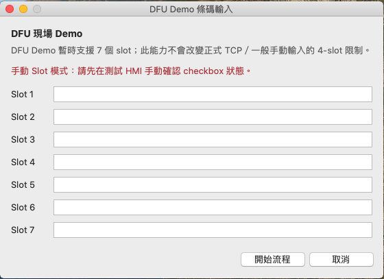
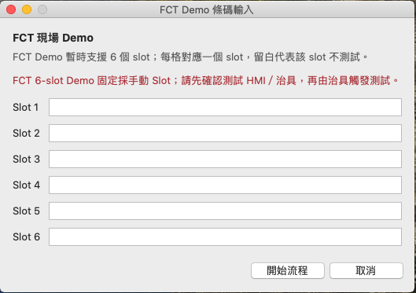
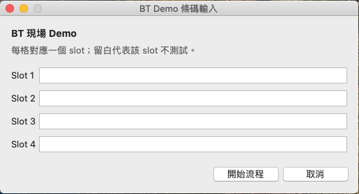
BT SN 人工覆核
BT 由 TestData CSV 的 Thread、Unit Number、SN、狀態與時間判定。若 CSV 實際 SN 與上位機 SN 不符或資料不完整，請於覆核視窗確認後以設備 SN 回報；若取消，Agent 回覆 NACK:BT_SN_MISMATCH。
BT 模板與啟動按鈕參考
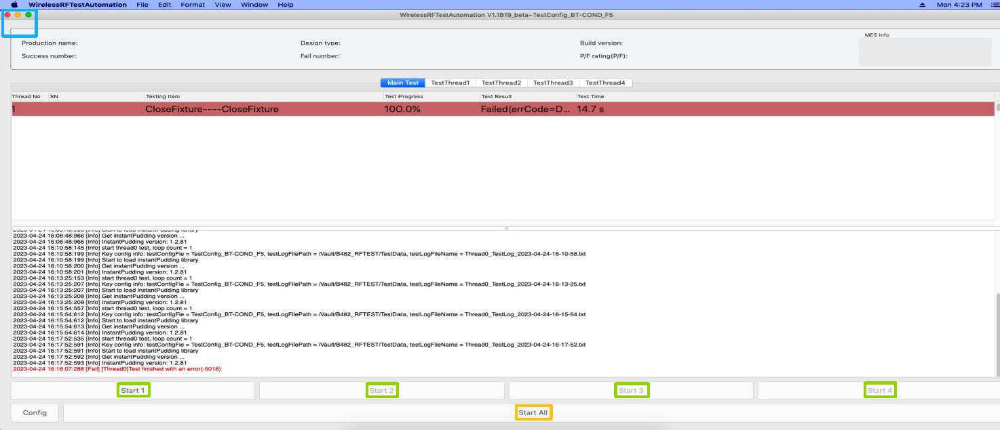
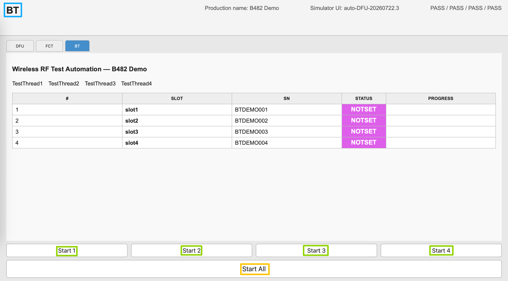
6. 結果與通訊紀錄
ACK 代表已接單，不代表測試完成：
ACK:DFU:JOB=20260723-001\r\n所有指定 slot 完成後才回傳 RESULT：
RESULT:DFU:JOB=20260723-001;1=SN001,PASS;2=SN002,PASS;4=SN004,FAIL\r\n| Log 關鍵字 | 意義／FAE 行動 |
|---|---|
| ACK | Agent 已接受 JOB，等待測試完成。 |
| RESULT | 本 JOB 所有指定 slot 已完成。 |
| BUSY | 前一 JOB 尚未完成；等待結果後再送新 JOB。 |
| START_FAILED | 影像定位、HID 或 checkbox 驗證失敗；檢查保留截圖與匹配疊圖。 |
| TCP_NOT_CONNECTED | Arduino 沒有上位機 TCP client，ACK／RESULT 無法送回。 |
| TIMEOUT | 逾時前沒有新結果；檢查 CSV 路徑、SN 與測試機狀態。 |
7. 常見異常
| 現象 | 處理方式 |
|---|---|
| USB CDC 清單沒有 Arduino | 確認 USB 資料線，關閉 Arduino Serial Monitor，按「掃描」，必要時重新插拔 USB。 |
| 連線後 IP 或韌體資訊未顯示 | 確認選到正確 usbmodem，檢查 Log 的 GET_IP／INFO 回覆；未回覆 INFO 代表舊版或未知韌體，請記錄完整 Log 後確認燒錄版本。 |
截圖只出現 ACK:SCREENSHOT | 韌體已收到命令，但 HID 截圖函式未返回；保留 Agent Log，確認 macOS 是否辨識 Arduino 鍵盤 HID。 |
截圖已有 ACK 與 OK 但無 PNG | Arduino 已完成 HID 函式；檢查 macOS 截圖快捷鍵、實際儲存位置與資料夾寫入權限。 |
| 顯示協定版本警告 | 可繼續測試，但須記錄 Agent 版本、FW、PROTO、BOARD、USB CDC 裝置名稱與完整 Log，交由開發人員確認相容性。 |
| 找不到模板／相似度過低 | 用目前部署機的新截圖重做模板；確認解析度、縮放、HMI 頁面與主題一致。 |
| 疊圖正確但游標偏移 | 於「設定 → HID 設定」調整自動比例、偏移或 absolute 虛擬桌面尺寸；不要任意重裁已正確的模板。 |
| BT CSV 未被接受 | 確認根路徑指向 TestData、檔案在當日 PASSED／FAILED、建立時間晚於 Start，且 Thread、Unit Number、SN 與狀態一致。 |
8. 每日開線檢核
- 工站選擇與實際設備一致。
- USB CDC 已連線，Arduino IP、FW、PROTO、BOARD 均已顯示；板型與實際硬體相符。
- CSV／Log／模板／截圖路徑正確且可存取。
- HMI 完整位於單一螢幕，解析度與製作模板時一致。
- 已用已知 SN 執行首件，匹配疊圖與 HID 落點正確。
- 上位機收到 ACK，測試後收到含 JOB ID 的 RESULT。
- 首件 PASS／FAIL 與實際測試機結果一致。